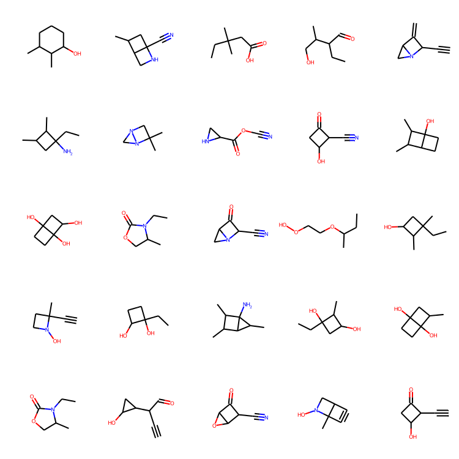

WGAN-GP with R-GCN for the generation of small molecular graphs
Author: akensert
Date created: 2021/06/30
Last modified: 2021/06/30
Description: Complete implementation of WGAN-GP with R-GCN to generate novel molecules.

Introduction
In this tutorial, we implement a generative model for graphs and use it to generate novel molecules.
Motivation: The development of new drugs (molecules) can be extremely time-consuming and costly. The use of deep learning models can alleviate the search for good candidate drugs, by predicting properties of known molecules (e.g., solubility, toxicity, affinity to target protein, etc.). As the number of possible molecules is astronomical, the space in which we search for/explore molecules is just a fraction of the entire space. Therefore, it's arguably desirable to implement generative models that can learn to generate novel molecules (which would otherwise have never been explored).
References (implementation)
The implementation in this tutorial is based on/inspired by the MolGAN paper and DeepChem's Basic MolGAN.
Further reading (generative models)
Recent implementations of generative models for molecular graphs also include Mol-CycleGAN, GraphVAE and JT-VAE. For more information on generative adverserial networks, see GAN, WGAN and WGAN-GP.
Setup
Install RDKit
RDKit is a collection of cheminformatics and machine-learning software written in C++ and Python. In this tutorial, RDKit is used to conveniently and efficiently transform SMILES to molecule objects, and then from those obtain sets of atoms and bonds.
SMILES expresses the structure of a given molecule in the form of an ASCII string. The SMILES string is a compact encoding which, for smaller molecules, is relatively human-readable. Encoding molecules as a string both alleviates and facilitates database and/or web searching of a given molecule. RDKit uses algorithms to accurately transform a given SMILES to a molecule object, which can then be used to compute a great number of molecular properties/features.
Notice, RDKit is commonly installed via Conda. However, thanks to rdkit_platform_wheels, rdkit can now (for the sake of this tutorial) be installed easily via pip, as follows:
pip -q install rdkit-pypi
And to allow easy visualization of a molecule objects, Pillow needs to be installed:
pip -q install Pillow
Import packages
from rdkit import Chem, RDLogger
from rdkit.Chem.Draw import IPythonConsole, MolsToGridImage
import numpy as np
import tensorflow as tf
from tensorflow import keras
RDLogger.DisableLog("rdApp.*")
Dataset
The dataset used in this tutorial is a quantum mechanics dataset (QM9), obtained from MoleculeNet. Although many feature and label columns come with the dataset, we'll only focus on the SMILES column. The QM9 dataset is a good first dataset to work with for generating graphs, as the maximum number of heavy (non-hydrogen) atoms found in a molecule is only nine.
csv_path = tf.keras.utils.get_file(
"qm9.csv", "https://deepchemdata.s3-us-west-1.amazonaws.com/datasets/qm9.csv"
)
data = []
with open(csv_path, "r") as f:
for line in f.readlines()[1:]:
data.append(line.split(",")[1])
# Let's look at a molecule of the dataset
smiles = data[1000]
print("SMILES:", smiles)
molecule = Chem.MolFromSmiles(smiles)
print("Num heavy atoms:", molecule.GetNumHeavyAtoms())
molecule
SMILES: Cn1cncc1O
Num heavy atoms: 7
Define helper functions
These helper functions will help convert SMILES to graphs and graphs to molecule objects.
Representing a molecular graph. Molecules can naturally be expressed as undirected
graphs G = (V, E), where V is a set of vertices (atoms), and E a set of edges
(bonds). As for this implementation, each graph (molecule) will be represented as an
adjacency tensor A, which encodes existence/non-existence of atom-pairs with their
one-hot encoded bond types stretching an extra dimension, and a feature tensor H, which
for each atom, one-hot encodes its atom type. Notice, as hydrogen atoms can be inferred by
RDKit, hydrogen atoms are excluded from A and H for easier modeling.
atom_mapping = {
"C": 0,
0: "C",
"N": 1,
1: "N",
"O": 2,
2: "O",
"F": 3,
3: "F",
}
bond_mapping = {
"SINGLE": 0,
0: Chem.BondType.SINGLE,
"DOUBLE": 1,
1: Chem.BondType.DOUBLE,
"TRIPLE": 2,
2: Chem.BondType.TRIPLE,
"AROMATIC": 3,
3: Chem.BondType.AROMATIC,
}
NUM_ATOMS = 9 # Maximum number of atoms
ATOM_DIM = 4 + 1 # Number of atom types
BOND_DIM = 4 + 1 # Number of bond types
LATENT_DIM = 64 # Size of the latent space
def smiles_to_graph(smiles):
# Converts SMILES to molecule object
molecule = Chem.MolFromSmiles(smiles)
# Initialize adjacency and feature tensor
adjacency = np.zeros((BOND_DIM, NUM_ATOMS, NUM_ATOMS), "float32")
features = np.zeros((NUM_ATOMS, ATOM_DIM), "float32")
# loop over each atom in molecule
for atom in molecule.GetAtoms():
i = atom.GetIdx()
atom_type = atom_mapping[atom.GetSymbol()]
features[i] = np.eye(ATOM_DIM)[atom_type]
# loop over one-hop neighbors
for neighbor in atom.GetNeighbors():
j = neighbor.GetIdx()
bond = molecule.GetBondBetweenAtoms(i, j)
bond_type_idx = bond_mapping[bond.GetBondType().name]
adjacency[bond_type_idx, [i, j], [j, i]] = 1
# Where no bond, add 1 to last channel (indicating "non-bond")
# Notice: channels-first
adjacency[-1, np.sum(adjacency, axis=0) == 0] = 1
# Where no atom, add 1 to last column (indicating "non-atom")
features[np.where(np.sum(features, axis=1) == 0)[0], -1] = 1
return adjacency, features
def graph_to_molecule(graph):
# Unpack graph
adjacency, features = graph
# RWMol is a molecule object intended to be edited
molecule = Chem.RWMol()
# Remove "no atoms" & atoms with no bonds
keep_idx = np.where(
(np.argmax(features, axis=1) != ATOM_DIM - 1)
& (np.sum(adjacency[:-1], axis=(0, 1)) != 0)
)[0]
features = features[keep_idx]
adjacency = adjacency[:, keep_idx, :][:, :, keep_idx]
# Add atoms to molecule
for atom_type_idx in np.argmax(features, axis=1):
atom = Chem.Atom(atom_mapping[atom_type_idx])
_ = molecule.AddAtom(atom)
# Add bonds between atoms in molecule; based on the upper triangles
# of the [symmetric] adjacency tensor
(bonds_ij, atoms_i, atoms_j) = np.where(np.triu(adjacency) == 1)
for (bond_ij, atom_i, atom_j) in zip(bonds_ij, atoms_i, atoms_j):
if atom_i == atom_j or bond_ij == BOND_DIM - 1:
continue
bond_type = bond_mapping[bond_ij]
molecule.AddBond(int(atom_i), int(atom_j), bond_type)
# Sanitize the molecule; for more information on sanitization, see
# https://www.rdkit.org/docs/RDKit_Book.html#molecular-sanitization
flag = Chem.SanitizeMol(molecule, catchErrors=True)
# Let's be strict. If sanitization fails, return None
if flag != Chem.SanitizeFlags.SANITIZE_NONE:
return None
return molecule
# Test helper functions
graph_to_molecule(smiles_to_graph(smiles))
Generate training set
To save training time, we'll only use a tenth of the QM9 dataset.
adjacency_tensor, feature_tensor = [], []
for smiles in data[::10]:
adjacency, features = smiles_to_graph(smiles)
adjacency_tensor.append(adjacency)
feature_tensor.append(features)
adjacency_tensor = np.array(adjacency_tensor)
feature_tensor = np.array(feature_tensor)
print("adjacency_tensor.shape =", adjacency_tensor.shape)
print("feature_tensor.shape =", feature_tensor.shape)
adjacency_tensor.shape = (13389, 5, 9, 9)
feature_tensor.shape = (13389, 9, 5)
Model
The idea is to implement a generator network and a discriminator network via WGAN-GP, that will result in a generator network that can generate small novel molecules (small graphs).
The generator network needs to be able to map (for each example in the batch) a vector z
to a 3-D adjacency tensor (A) and 2-D feature tensor (H). For this, z will first be
passed through a fully-connected network, for which the output will be further passed
through two separate fully-connected networks. Each of these two fully-connected
networks will then output (for each example in the batch) a tanh-activated vector
followed by a reshape and softmax to match that of a multi-dimensional adjacency/feature
tensor.
As the discriminator network will receives as input a graph (A, H) from either the
generator or from the training set, we'll need to implement graph convolutional layers,
which allows us to operate on graphs. This means that input to the discriminator network
will first pass through graph convolutional layers, then an average-pooling layer,
and finally a few fully-connected layers. The final output should be a scalar (for each
example in the batch) which indicates the "realness" of the associated input
(in this case a "fake" or "real" molecule).
Graph generator
def GraphGenerator(
dense_units, dropout_rate, latent_dim, adjacency_shape, feature_shape,
):
z = keras.layers.Input(shape=(LATENT_DIM,))
# Propagate through one or more densely connected layers
x = z
for units in dense_units:
x = keras.layers.Dense(units, activation="tanh")(x)
x = keras.layers.Dropout(dropout_rate)(x)
# Map outputs of previous layer (x) to [continuous] adjacency tensors (x_adjacency)
x_adjacency = keras.layers.Dense(tf.math.reduce_prod(adjacency_shape))(x)
x_adjacency = keras.layers.Reshape(adjacency_shape)(x_adjacency)
# Symmetrify tensors in the last two dimensions
x_adjacency = (x_adjacency + tf.transpose(x_adjacency, (0, 1, 3, 2))) / 2
x_adjacency = keras.layers.Softmax(axis=1)(x_adjacency)
# Map outputs of previous layer (x) to [continuous] feature tensors (x_features)
x_features = keras.layers.Dense(tf.math.reduce_prod(feature_shape))(x)
x_features = keras.layers.Reshape(feature_shape)(x_features)
x_features = keras.layers.Softmax(axis=2)(x_features)
return keras.Model(inputs=z, outputs=[x_adjacency, x_features], name="Generator")
generator = GraphGenerator(
dense_units=[128, 256, 512],
dropout_rate=0.2,
latent_dim=LATENT_DIM,
adjacency_shape=(BOND_DIM, NUM_ATOMS, NUM_ATOMS),
feature_shape=(NUM_ATOMS, ATOM_DIM),
)
generator.summary()
Model: "Generator"
__________________________________________________________________________________________________
Layer (type) Output Shape Param # Connected to
==================================================================================================
input_1 (InputLayer) [(None, 64)] 0
__________________________________________________________________________________________________
dense (Dense) (None, 128) 8320 input_1[0][0]
__________________________________________________________________________________________________
dropout (Dropout) (None, 128) 0 dense[0][0]
__________________________________________________________________________________________________
dense_1 (Dense) (None, 256) 33024 dropout[0][0]
__________________________________________________________________________________________________
dropout_1 (Dropout) (None, 256) 0 dense_1[0][0]
__________________________________________________________________________________________________
dense_2 (Dense) (None, 512) 131584 dropout_1[0][0]
__________________________________________________________________________________________________
dropout_2 (Dropout) (None, 512) 0 dense_2[0][0]
__________________________________________________________________________________________________
dense_3 (Dense) (None, 405) 207765 dropout_2[0][0]
__________________________________________________________________________________________________
reshape (Reshape) (None, 5, 9, 9) 0 dense_3[0][0]
__________________________________________________________________________________________________
tf.compat.v1.transpose (TFOpLam (None, 5, 9, 9) 0 reshape[0][0]
__________________________________________________________________________________________________
tf.__operators__.add (TFOpLambd (None, 5, 9, 9) 0 reshape[0][0]
tf.compat.v1.transpose[0][0]
__________________________________________________________________________________________________
dense_4 (Dense) (None, 45) 23085 dropout_2[0][0]
__________________________________________________________________________________________________
tf.math.truediv (TFOpLambda) (None, 5, 9, 9) 0 tf.__operators__.add[0][0]
__________________________________________________________________________________________________
reshape_1 (Reshape) (None, 9, 5) 0 dense_4[0][0]
__________________________________________________________________________________________________
softmax (Softmax) (None, 5, 9, 9) 0 tf.math.truediv[0][0]
__________________________________________________________________________________________________
softmax_1 (Softmax) (None, 9, 5) 0 reshape_1[0][0]
==================================================================================================
Total params: 403,778
Trainable params: 403,778
Non-trainable params: 0
__________________________________________________________________________________________________
Graph discriminator
Graph convolutional layer. The relational graph convolutional layers implements non-linearly transformed neighborhood aggregations. We can define these layers as follows:
H^{l+1} = σ(D^{-1} @ A @ H^{l+1} @ W^{l})
Where σ denotes the non-linear transformation (commonly a ReLU activation), A the
adjacency tensor, H^{l} the feature tensor at the l:th layer, D^{-1} the inverse
diagonal degree tensor of A, and W^{l} the trainable weight tensor at the l:th
layer. Specifically, for each bond type (relation), the degree tensor expresses, in the
diagonal, the number of bonds attached to each atom. Notice, in this tutorial D^{-1} is
omitted, for two reasons: (1) it's not obvious how to apply this normalization on the
continuous adjacency tensors (generated by the generator), and (2) the performance of the
WGAN without normalization seems to work just fine. Furthermore, in contrast to the
original paper, no self-loop is defined, as we don't
want to train the generator to predict "self-bonding".
class RelationalGraphConvLayer(keras.layers.Layer):
def __init__(
self,
units=128,
activation="relu",
use_bias=False,
kernel_initializer="glorot_uniform",
bias_initializer="zeros",
kernel_regularizer=None,
bias_regularizer=None,
**kwargs
):
super().__init__(**kwargs)
self.units = units
self.activation = keras.activations.get(activation)
self.use_bias = use_bias
self.kernel_initializer = keras.initializers.get(kernel_initializer)
self.bias_initializer = keras.initializers.get(bias_initializer)
self.kernel_regularizer = keras.regularizers.get(kernel_regularizer)
self.bias_regularizer = keras.regularizers.get(bias_regularizer)
def build(self, input_shape):
bond_dim = input_shape[0][1]
atom_dim = input_shape[1][2]
self.kernel = self.add_weight(
shape=(bond_dim, atom_dim, self.units),
initializer=self.kernel_initializer,
regularizer=self.kernel_regularizer,
trainable=True,
name="W",
dtype=tf.float32,
)
if self.use_bias:
self.bias = self.add_weight(
shape=(bond_dim, 1, self.units),
initializer=self.bias_initializer,
regularizer=self.bias_regularizer,
trainable=True,
name="b",
dtype=tf.float32,
)
self.built = True
def call(self, inputs, training=False):
adjacency, features = inputs
# Aggregate information from neighbors
x = tf.matmul(adjacency, features[:, None, :, :])
# Apply linear transformation
x = tf.matmul(x, self.kernel)
if self.use_bias:
x += self.bias
# Reduce bond types dim
x_reduced = tf.reduce_sum(x, axis=1)
# Apply non-linear transformation
return self.activation(x_reduced)
def GraphDiscriminator(
gconv_units, dense_units, dropout_rate, adjacency_shape, feature_shape
):
adjacency = keras.layers.Input(shape=adjacency_shape)
features = keras.layers.Input(shape=feature_shape)
# Propagate through one or more graph convolutional layers
features_transformed = features
for units in gconv_units:
features_transformed = RelationalGraphConvLayer(units)(
[adjacency, features_transformed]
)
# Reduce 2-D representation of molecule to 1-D
x = keras.layers.GlobalAveragePooling1D()(features_transformed)
# Propagate through one or more densely connected layers
for units in dense_units:
x = keras.layers.Dense(units, activation="relu")(x)
x = keras.layers.Dropout(dropout_rate)(x)
# For each molecule, output a single scalar value expressing the
# "realness" of the inputted molecule
x_out = keras.layers.Dense(1, dtype="float32")(x)
return keras.Model(inputs=[adjacency, features], outputs=x_out)
discriminator = GraphDiscriminator(
gconv_units=[128, 128, 128, 128],
dense_units=[512, 512],
dropout_rate=0.2,
adjacency_shape=(BOND_DIM, NUM_ATOMS, NUM_ATOMS),
feature_shape=(NUM_ATOMS, ATOM_DIM),
)
discriminator.summary()
Model: "model"
__________________________________________________________________________________________________
Layer (type) Output Shape Param # Connected to
==================================================================================================
input_2 (InputLayer) [(None, 5, 9, 9)] 0
__________________________________________________________________________________________________
input_3 (InputLayer) [(None, 9, 5)] 0
__________________________________________________________________________________________________
relational_graph_conv_layer (Re (None, 9, 128) 3200 input_2[0][0]
input_3[0][0]
__________________________________________________________________________________________________
relational_graph_conv_layer_1 ( (None, 9, 128) 81920 input_2[0][0]
relational_graph_conv_layer[0][0]
__________________________________________________________________________________________________
relational_graph_conv_layer_2 ( (None, 9, 128) 81920 input_2[0][0]
relational_graph_conv_layer_1[0][
__________________________________________________________________________________________________
relational_graph_conv_layer_3 ( (None, 9, 128) 81920 input_2[0][0]
relational_graph_conv_layer_2[0][
__________________________________________________________________________________________________
global_average_pooling1d (Globa (None, 128) 0 relational_graph_conv_layer_3[0][
__________________________________________________________________________________________________
dense_5 (Dense) (None, 512) 66048 global_average_pooling1d[0][0]
__________________________________________________________________________________________________
dropout_3 (Dropout) (None, 512) 0 dense_5[0][0]
__________________________________________________________________________________________________
dense_6 (Dense) (None, 512) 262656 dropout_3[0][0]
__________________________________________________________________________________________________
dropout_4 (Dropout) (None, 512) 0 dense_6[0][0]
__________________________________________________________________________________________________
dense_7 (Dense) (None, 1) 513 dropout_4[0][0]
==================================================================================================
Total params: 578,177
Trainable params: 578,177
Non-trainable params: 0
__________________________________________________________________________________________________
WGAN-GP
class GraphWGAN(keras.Model):
def __init__(
self,
generator,
discriminator,
discriminator_steps=1,
generator_steps=1,
gp_weight=10,
**kwargs
):
super().__init__(**kwargs)
self.generator = generator
self.discriminator = discriminator
self.discriminator_steps = discriminator_steps
self.generator_steps = generator_steps
self.gp_weight = gp_weight
self.latent_dim = self.generator.input_shape[-1]
def compile(self, optimizer_generator, optimizer_discriminator, **kwargs):
super().compile(**kwargs)
self.optimizer_generator = optimizer_generator
self.optimizer_discriminator = optimizer_discriminator
self.metric_generator = keras.metrics.Mean(name="loss_gen")
self.metric_discriminator = keras.metrics.Mean(name="loss_dis")
def train_step(self, inputs):
if isinstance(inputs[0], tuple):
inputs = inputs[0]
graph_real = inputs
self.batch_size = tf.shape(inputs[0])[0]
# Train the discriminator for one or more steps
for _ in range(self.discriminator_steps):
z = tf.random.normal((self.batch_size, self.latent_dim))
with tf.GradientTape() as tape:
graph_generated = self.generator(z, training=True)
loss = self._loss_discriminator(graph_real, graph_generated)
grads = tape.gradient(loss, self.discriminator.trainable_weights)
self.optimizer_discriminator.apply_gradients(
zip(grads, self.discriminator.trainable_weights)
)
self.metric_discriminator.update_state(loss)
# Train the generator for one or more steps
for _ in range(self.generator_steps):
z = tf.random.normal((self.batch_size, self.latent_dim))
with tf.GradientTape() as tape:
graph_generated = self.generator(z, training=True)
loss = self._loss_generator(graph_generated)
grads = tape.gradient(loss, self.generator.trainable_weights)
self.optimizer_generator.apply_gradients(
zip(grads, self.generator.trainable_weights)
)
self.metric_generator.update_state(loss)
return {m.name: m.result() for m in self.metrics}
def _loss_discriminator(self, graph_real, graph_generated):
logits_real = self.discriminator(graph_real, training=True)
logits_generated = self.discriminator(graph_generated, training=True)
loss = tf.reduce_mean(logits_generated) - tf.reduce_mean(logits_real)
loss_gp = self._gradient_penalty(graph_real, graph_generated)
return loss + loss_gp * self.gp_weight
def _loss_generator(self, graph_generated):
logits_generated = self.discriminator(graph_generated, training=True)
return -tf.reduce_mean(logits_generated)
def _gradient_penalty(self, graph_real, graph_generated):
# Unpack graphs
adjacency_real, features_real = graph_real
adjacency_generated, features_generated = graph_generated
# Generate interpolated graphs (adjacency_interp and features_interp)
alpha = tf.random.uniform([self.batch_size])
alpha = tf.reshape(alpha, (self.batch_size, 1, 1, 1))
adjacency_interp = (adjacency_real * alpha) + (1 - alpha) * adjacency_generated
alpha = tf.reshape(alpha, (self.batch_size, 1, 1))
features_interp = (features_real * alpha) + (1 - alpha) * features_generated
# Compute the logits of interpolated graphs
with tf.GradientTape() as tape:
tape.watch(adjacency_interp)
tape.watch(features_interp)
logits = self.discriminator(
[adjacency_interp, features_interp], training=True
)
# Compute the gradients with respect to the interpolated graphs
grads = tape.gradient(logits, [adjacency_interp, features_interp])
# Compute the gradient penalty
grads_adjacency_penalty = (1 - tf.norm(grads[0], axis=1)) ** 2
grads_features_penalty = (1 - tf.norm(grads[1], axis=2)) ** 2
return tf.reduce_mean(
tf.reduce_mean(grads_adjacency_penalty, axis=(-2, -1))
+ tf.reduce_mean(grads_features_penalty, axis=(-1))
)
Train the model
To save time (if run on a CPU), we'll only train the model for 10 epochs.
wgan = GraphWGAN(generator, discriminator, discriminator_steps=1)
wgan.compile(
optimizer_generator=keras.optimizers.Adam(5e-4),
optimizer_discriminator=keras.optimizers.Adam(5e-4),
)
wgan.fit([adjacency_tensor, feature_tensor], epochs=10, batch_size=16)
Epoch 1/10
837/837 [==============================] - 197s 226ms/step - loss_gen: 2.4626 - loss_dis: -4.3158
Epoch 2/10
837/837 [==============================] - 188s 225ms/step - loss_gen: 1.2832 - loss_dis: -1.3941
Epoch 3/10
837/837 [==============================] - 199s 237ms/step - loss_gen: 0.6742 - loss_dis: -1.2663
Epoch 4/10
837/837 [==============================] - 187s 224ms/step - loss_gen: 0.5090 - loss_dis: -1.6628
Epoch 5/10
837/837 [==============================] - 187s 223ms/step - loss_gen: 0.3686 - loss_dis: -1.4759
Epoch 6/10
837/837 [==============================] - 199s 237ms/step - loss_gen: 0.6925 - loss_dis: -1.5122
Epoch 7/10
837/837 [==============================] - 194s 232ms/step - loss_gen: 0.3966 - loss_dis: -1.5041
Epoch 8/10
837/837 [==============================] - 195s 233ms/step - loss_gen: 0.3595 - loss_dis: -1.6277
Epoch 9/10
837/837 [==============================] - 194s 232ms/step - loss_gen: 0.5862 - loss_dis: -1.7277
Epoch 10/10
837/837 [==============================] - 185s 221ms/step - loss_gen: -0.1642 - loss_dis: -1.5273
<keras.callbacks.History at 0x7ff8daed3a90>
Sample novel molecules with the generator
def sample(generator, batch_size):
z = tf.random.normal((batch_size, LATENT_DIM))
graph = generator.predict(z)
# obtain one-hot encoded adjacency tensor
adjacency = tf.argmax(graph[0], axis=1)
adjacency = tf.one_hot(adjacency, depth=BOND_DIM, axis=1)
# Remove potential self-loops from adjacency
adjacency = tf.linalg.set_diag(adjacency, tf.zeros(tf.shape(adjacency)[:-1]))
# obtain one-hot encoded feature tensor
features = tf.argmax(graph[1], axis=2)
features = tf.one_hot(features, depth=ATOM_DIM, axis=2)
return [
graph_to_molecule([adjacency[i].numpy(), features[i].numpy()])
for i in range(batch_size)
]
molecules = sample(wgan.generator, batch_size=48)
MolsToGridImage(
[m for m in molecules if m is not None][:25], molsPerRow=5, subImgSize=(150, 150)
)

Concluding thoughts
Inspecting the results. Ten epochs of training seemed enough to generate some decent looking molecules! Notice, in contrast to the MolGAN paper, the uniqueness of the generated molecules in this tutorial seems really high, which is great!
What we've learned, and prospects. In this tutorial, a generative model for molecular graphs was successfully implemented, which allowed us to generate novel molecules. In the future, it would be interesting to implement generative models that can modify existing molecules (for instance, to optimize solubility or protein-binding of an existing molecule). For that however, a reconstruction loss would likely be needed, which is tricky to implement as there's no easy and obvious way to compute similarity between two molecular graphs.
Example available on HuggingFace
| Trained Model | Demo |
|---|---|